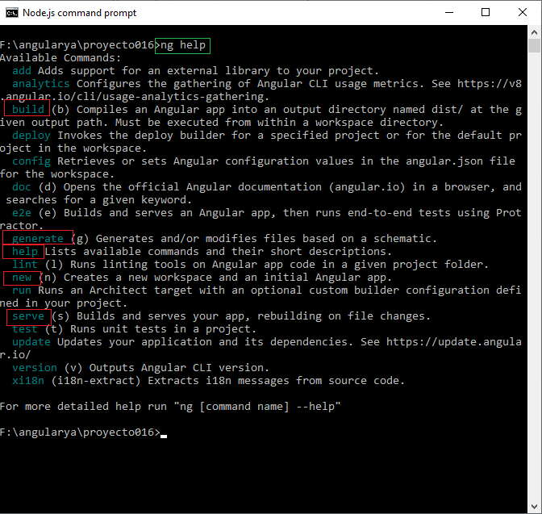
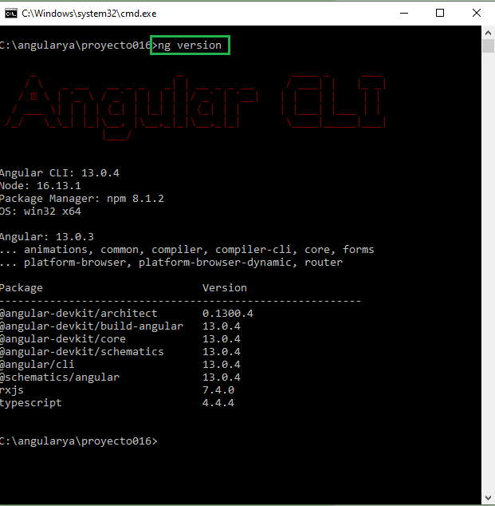

En las últimas versiones de Angular se le ha dado una responsabilidad fundamental a la herramienta Angular CLI.
Hemos visto que Angular CLI nos permite entre otras cosas:
Debe tener siempre a mano la página que contiene la documentación oficial de Angular CLI.
Recordemos que en el primer concepto de este curso lo primero que hicimos luego de instalar Node.js es la instalación de Angular.CLI mediante el comando:
npm install -g @angular/cli
ng help
Tenemos como resultado muchos de los comandos ya vistos y utilizados en conceptos anteriores:
Si por ejemplo queremos ver la versión de Angular.CLI que tenemos instalada en nuestra computadora debemos ejecutar:
ng version